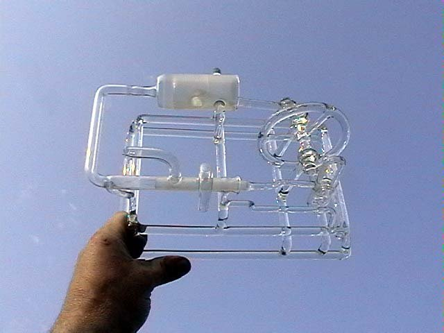

První, jednoválcový parní stroj
První model, který jsem začal vyrábět, byl jednoválcový, jednočinný parní stroj. Při jeho výrobě jsem použil sklářské postupy, které jsem léta používal. Jak je vidět, daly se využít prakticky na celou konstrukci.


Trubice na píst a šoupě jsem vybral tak, aby do sebe nešly vzájemně zasunout, a to s co nejmenším přesahem. Pak jsem na soustruhu vytočil měděný trn, na začátku, asi v délce 5 mm, s mírným kuželem. Tímto přípravkem jsem pak s CITEM, za pomoci volně vázaného brusiva s vodou, postupně vybrušoval vnitřní plochu válce. Když bylo vybroušení válce hotové, tak jsem začal vyrábět píst. Nejdříve jsem si do tvarovacích grafitových kleští rozfoukl trubici na průměr o cca 0,5 mm větší, než byl otvor ve válci. Do této trubice jsem následně vtavil pístní čep s již předem připravenou ojnicí. Tento komplet jsem pak, nejdříve nahrubo, zabrousil za použití měděného trnu s přesným vnitřním průměrem. Následně jsem pak píst načisto za pomoci jemného brusného prášku zabrousil do válce. Když bylo zabroušeno, tak jsem píst odřízl na délku 30 mm.
Podobným způsobem jsem pak vyrobil i šoupě.
Po kompletaci jsem začal „ladit“. To znamená, že jsem přihýbáním excentru pro pohon šoupěte zkoušel optimální postavení oproti pístu, aby se válec začal plnit ve správný okamžik, ale zároveň, aby ve správný okamžik došlo k uzavření přívodu páry a naopak, aby ve správný okamžik došlo k uvolnění tlaku nad pístem. Tohle „ladění“ trvalo asi dvě hodiny, a bez úspěchu. Důvodem bylo, že jsem odvzdušňovací otvor udělal příliš krátký. Zkušenost získaná chybou konstrukce mě donutila celé šoupě udělat znova.
Hrál jsem si s tím asi do 2 hodin do rána, za vydatné podpory mých přátel radioamatérů, kteří mi na krátké i velké vzdálenosti drželi palce.
A pak přišel ten OKAMŽIK. Připojil jsem hadičku s tlakovým vzduchem, dal impulz setrvačníku a parostroj se rozběhl.
První funkční jednoválcový parní stroj otevřít na YouTube